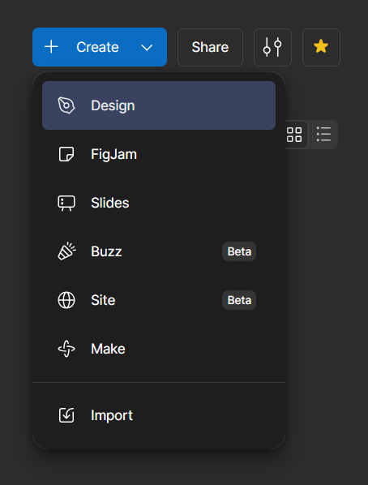
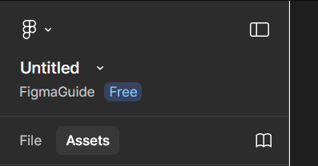
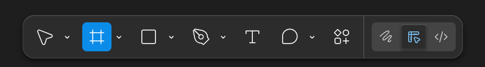
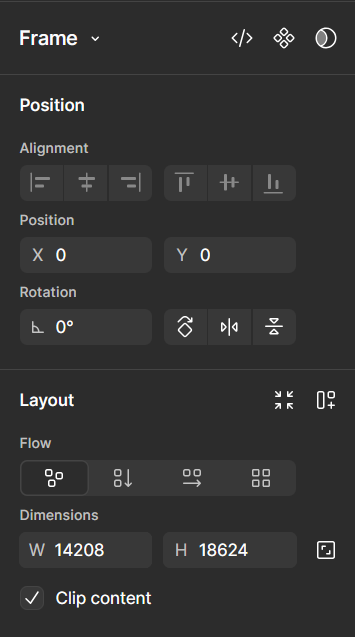
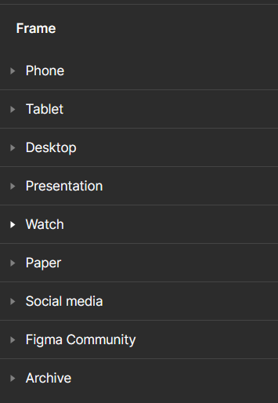
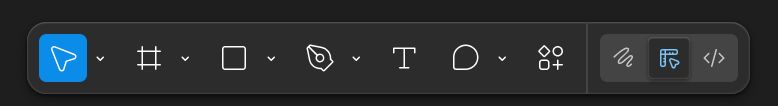

Create a Design File
This article will walk you through how to create a design file within a collaborative Figma project, as well as the most common design tools you will use.
Create a Collaborative File
Now that you have a project and have added collaborators to it, you can create a number of different file types your team members can contribute to. This tutorial will cover the Design file type.
-
Navigate to the top right corner in your project and click the blue create button.
-
Click ‘Design’

Figma will take you to a blank design document.
-
Navigate to the top of the right panel in the design document and click on ‘Untitled’
Info
This is the name of your file. Projects can get very large very quickly, so it is recommended to name all your files.

-
Input the name of your file and press enter.
Warning
When you export this file, the file name will default to the name you give it in Figma. To follow best practices and avoid file path issues, choose a short and descriptive name. Avoid spaces and instead use a naming convention like camelCase or replace the spaces with dashes or underscores.
Currently, this file has no canvas to work on. You must create a page to work on called a frame
-
Create a Frame using the tool that looks like grid lines in the bottom center menu.

Drag out a Frame
-
Select the frame tool, click and drag a white rectangle with your mouse. This is your frame.
With the frame selected, the rightmost panel of the workspace will become a frame settings menu.

-
Click on the width and height input fields under ‘Dimensions’ to specify exact dimensions. Press enter when you are done.
Use Preset
-
Select the frame tool, click on one of the preset frames in the right panel to insert it into the workspace.

You can move or resize your frame at any time by selecting the frame tool ( F ) and clicking on the frame.
Select Tool
To manipulate an element on the page, you need to use the select tool.
-
Navigate to the bottom main menu and click the cursor button to activate the select tool ( V ).
This tool will allow you to select and move elements in the workspace.

Move Tools
The hand tool allows you to move around the workspace.
- Activate the Hand Tool ( H ). Your cursor should become a hand.
-
Click and drag your mouse to move around the workspace. Release your mouse button to reposition.
Additionally, you can activate the hand tool in the main menu: [ select drop down → hand tool ]
-
Deactivate hand tool by (V) or by selecting the select tool.
You can zoom in and out of the workspace to see elements better.
- Click on the percent number drop down menu under the ‘share’ button and select a zoom option. Additionally, you can use (ctrl + +) to zoom in and (ctrl + -) to zoom out one increment at a time.
Conclusion
Now you can create a collaborative design file and move about the workspace confidently. In the next article, we’ll look at how to use the design tools to begin creating some visuals.